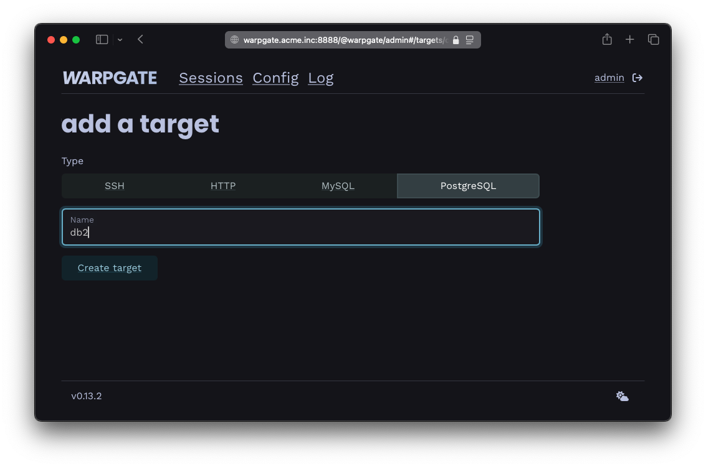
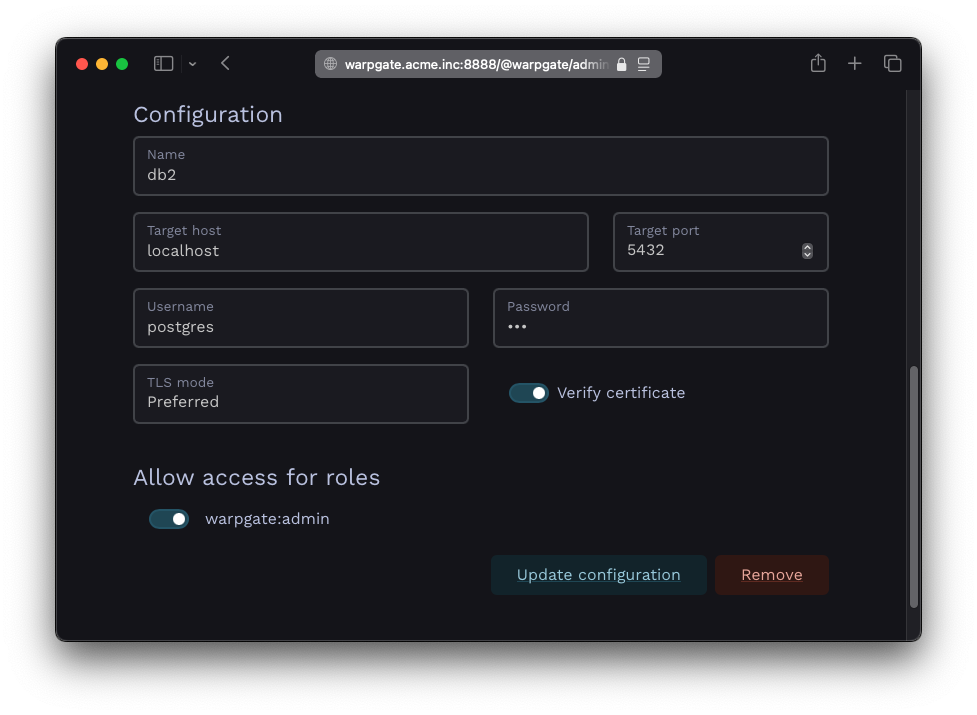
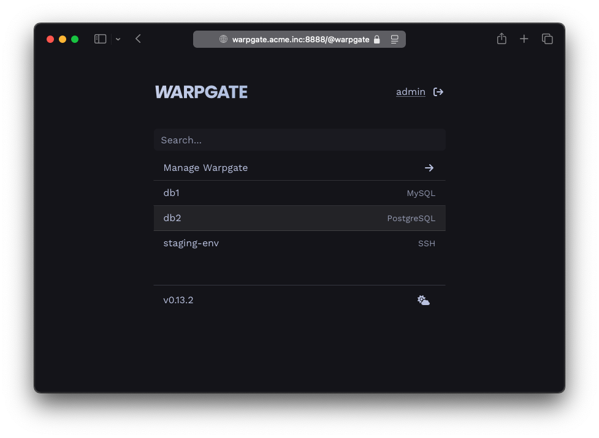
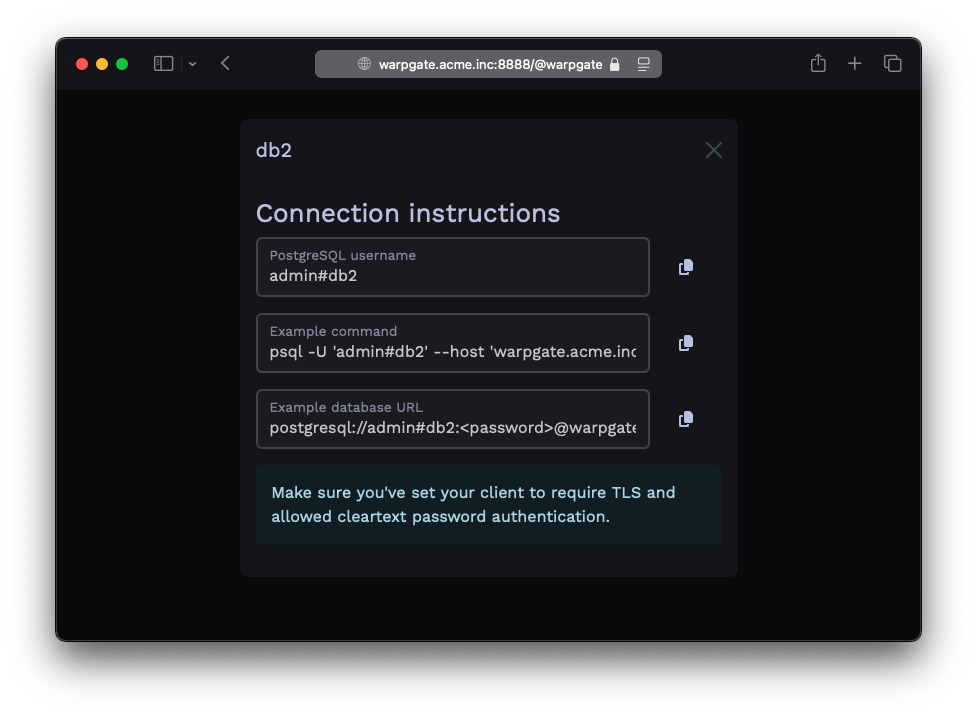
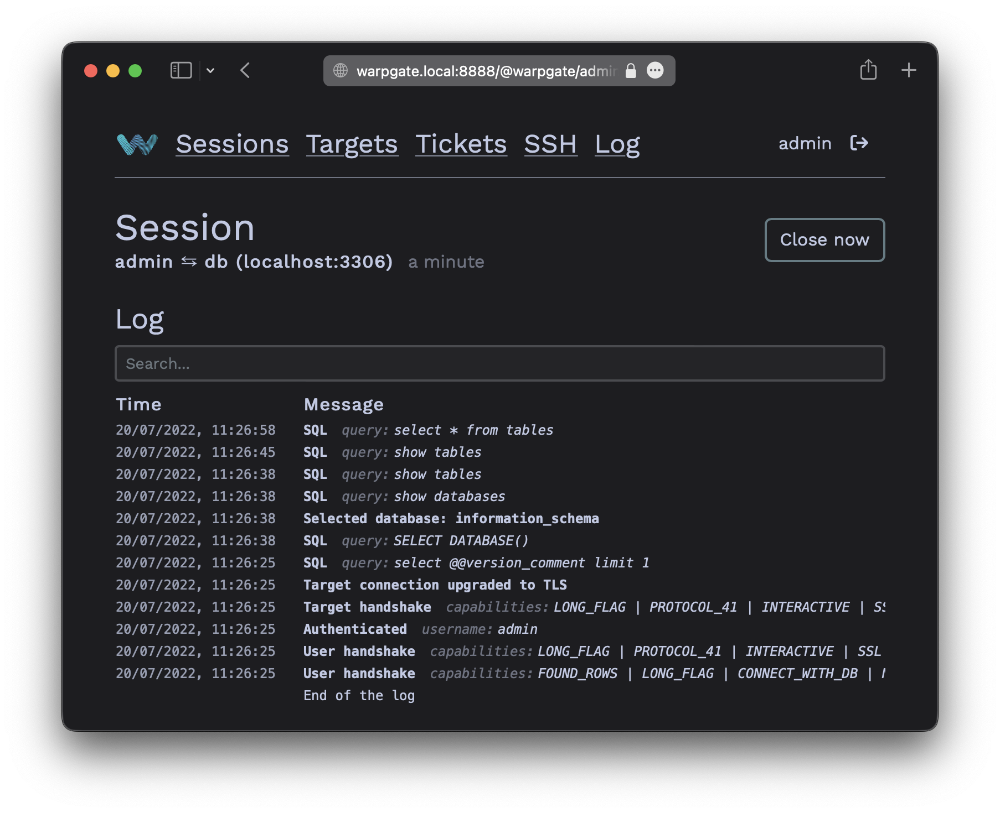

Adding PostgreSQL targets§
Authentication setup§
Currently, Warpgate can connect to PostgreSQL servers with a username/password using md5 and password (plaintext) auth mode.
As a PostgreSQL protocol server, Warpgate only allows secure (TLS) connections and uses password auth mode.
Enabling PostgreSQL listener§
Enable the PostgreSQL protocol in your config file (default: /etc/warpgate.yaml) if you didn't do so during the initial setup:
+ postgres:
+ enable: true
+ certificate: /var/lib/warpgate/tls.certificate.pem
+ key: /var/lib/warpgate/tls.key.pem
You can reuse the same certificate and key that are used for the HTTP listener.
Connection setup§
Log into the Warpgate admin UI and navigate to Config > Targets > Add target and give the new PostgreSQL target a name:

Adding a PostgreSQL target
Fill out the configuration:

PostgreSQL target configuration
The target should show up on the Warpgate's homepage:

PostgreSQL target on the homepage
Users will be able to click the entry to obtain connection instructions:

PostgreSQL target connection instructions
Client setup§
You can now use any PostgreSQL client applications to connect through Warpgate with the following settings:
- Host: the Warpgate host
- Port: the Warpgate PostgreSQL port (default: 55432)
- Username:
admin#<target-name>oradmin:<target-name>, in this example:admin#db1 - Password: your Warpgate admin password
-
Tls
enabled
- Cleartext password authentication: allowed
If your client uses a database URL, use: postgresql://<username>#<target>:<password>@<warpgate host>:<warpgate postgresql port>?sslmode=require
While your PostgreSQL session is running, you'll be able to see its status in the Admin UI, including the query log:

PostgreSQL session log
2-factor authentication§
Warpgate supports the "In-browser auth" authentication for PostgreSQL clients by sending a login link in a PostgreSQL notice message. Some clients might ignore notice messages, but the users will still be able see and confirm their login request if they log into the Warpgate web UI.